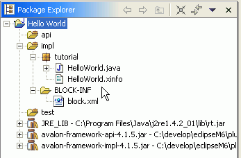

After you have created a new block you should see a project structure like this:

After you have created the new project with the "Hello World" Component, you now should run the component.
This is done by first selecting the project / block you want to run. In the above example this is "Hello World".
Than open the "run / run as... " Action Button.

Now select the "Merlin Container" item and the "Hello World" component will start.
If this is the first time you are running Merlin on your machine Merlin will download the latest version of the container from a remote repository and store it on your machine.
That's why it is important to be connected to the internet while launching Merlin the first time.
Note: In current versions of MerlinStudio Merlin is started in so called "execute" mode. Means with every launch of a block, the Merlin container will be started and directly finished after the execution of the block has finished.
This will be changed so that you can configure whether you would like to start Merlin in execution or server mode.
Debugging is done the same way like just running the block.
You can set breakpoints etc. in your block / component and step through the code.